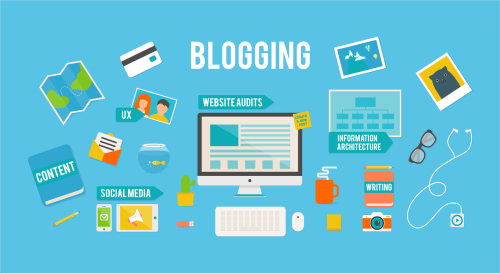

How to earn with blogging?
All you need is something interesting to say and enough patience and dedication to build traffic and a following. But how do successful bloggers make their money? We've interviewed a couple of them to reveal their monetisation secrets.